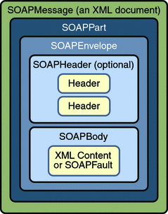

Equipe: Alessandro, Carla, Graziele, Kather, Lucas
Alessandro, Carla, Graziele, Kather, Lucas
Mensagem SOAP é constituída por:
Arquitetura
Elemento principal do XML que representa a mensagem
Mecanismo genérico que permite a adição de características à mensagem SOAP
Contém a informação a ser transportada
Define o que há na mensagem e como processá-la. Única parte obrigatória.
Mecanismo de serialização, pode ser usado para troca de instâncias de tipos definidos pela aplicação.
Define uma convenção que pode ser usada para representar as chamadas e respostas remotas aos procedimentos.
Protocolo que liga o SOAP e o HTTP
Indica as regras de serialização usadas nas mensagens SOAP
Indica se a entrada é obrigatória ou não
Usado pelo header para definir o último ponto de recepção de uma mensagem
O protocolo SOAP não está vinculado a nenhuma plataforma de hardware, software ou linguagem de programação, o que o torna compatível com diferentes sistemas operacionais e diferentes tecnologias.
Apesar de antigo, o padrão SOAP é um dos mais utilizados ainda hoje, pois garante liberdade na hora da sua implementação, já que o mesmo não depende de um ambiente "fechado", ou seja, permite ser utilizado com qualquer linguagem de programação e vários protocolos, tais como HTTP e RPC.
Vale lembrar que a escolha entre SOAP ou outro padrão (ex.: REST) depende do cenário em questão, e não das vantagens de x ou y.